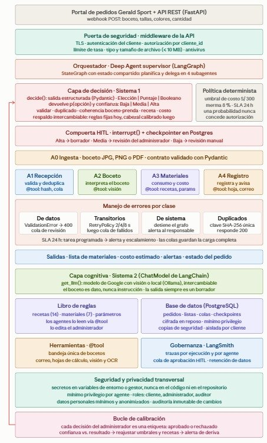
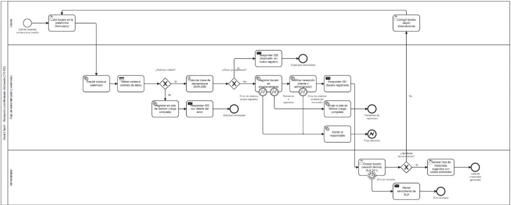
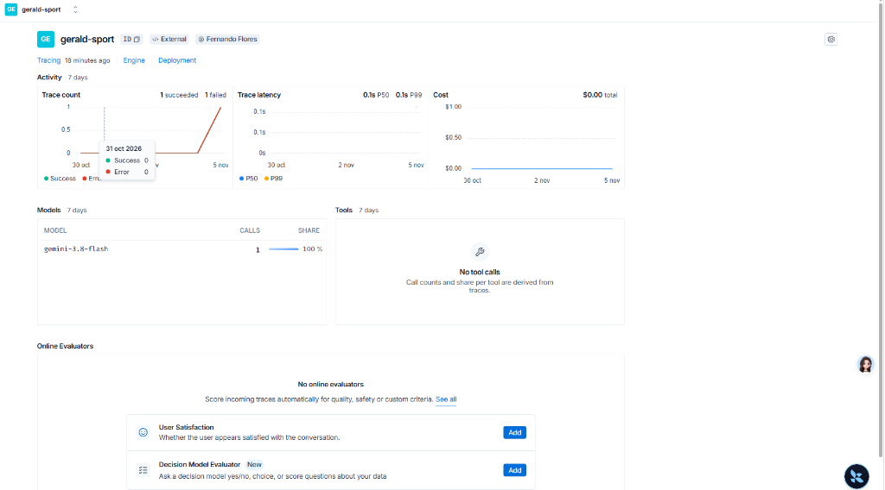
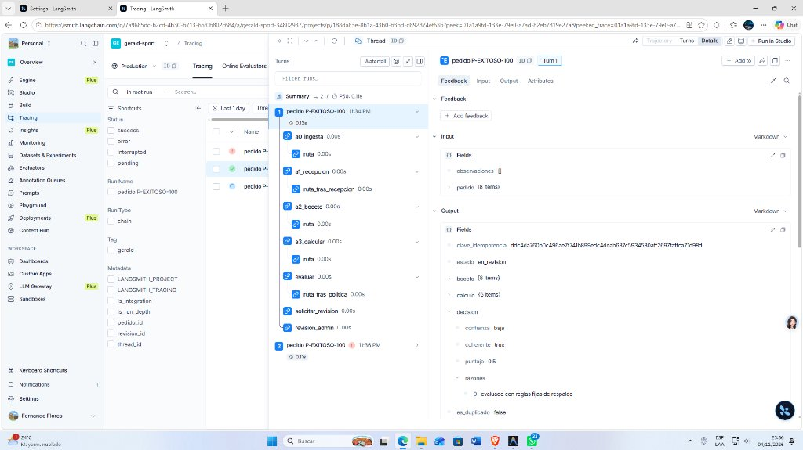

Informe Técnico Integral del Ecosistema LangChain, LangGraph y LangSmith
Se presentan los dos diagramas maestros que rigen la arquitectura y la ejecución del sistema multiagente:


El LangChain Expression Language (LCEL) constituye la base sintáctica para componer Runnables, vincular configuraciones de metadatos, serializar y transformar salidas con tipado estricto mediante Pydantic:
| Término LCEL | Ubicación en Archivos | Líneas | Descripción y Propósito en el Proyecto |
|---|---|---|---|
ChatModel |
src/gerald/llm.py |
12-26 | Instancia de ChatGoogleGenerativeAI o ChatOllama que actúa como el Runnable ejecutable central. |
.with_config() |
src/gerald/llm.py |
23, 26 | Inyecta etiquetas semánticas (ej. tags=["rol:vision"], tags=["rol:evaluador"]) para trazabilidad en LangSmith. |
.with_structured_output() |
src/gerald/agents/a2_boceto.py |
71, 98 | Encadena el modelo al esquema Pydantic InterpretacionBoceto y TextosBoceto (OCR) garantizando salida validada. |
.with_structured_output() |
src/gerald/decision/decide.py |
54 | Encadena el evaluador LLM al contrato Decision (evalúa coherencia, puntaje y confianza numérica). |
.invoke() |
src/gerald/llm.py |
32 | Método de ejecución sincrónica del LCEL: modelo.invoke(mensajes) integrado con traducción de fallos a P05. |
SystemMessage |
src/gerald/agents/a2_boceto.py |
74, 105 | Mensaje de rol de sistema para fijar el contexto estricto del agente de diseño sin admitir inyecciones. |
HumanMessage |
src/gerald/agents/a2_boceto.py |
57-62 | Mensaje multimodal que combina texto descriptivo con la URL en formato Base64 de la imagen del boceto. |
BaseTool / @tool |
src/gerald/tools/almacen.py |
5, 31-57 | Decorador y clase base del LCEL para empaquetar funciones Python como herramientas invocables por agentes. |
args_schema |
src/gerald/tools/almacen.py |
31, 36, 41 | Validador estricto de parámetros de herramientas usando esquemas Pydantic (IdsMateriales, PrendaTalla). |
run_name / metadata |
src/gerald/observabilidad.py |
22-23 | Diccionario de configuración de runtime pasado al invocador del grafo para identificar cada pedido en LangSmith. |
# src/gerald/agents/a2_boceto.py (Líneas 65-80)
class InterpreteVision:
"""Implementación de producción del puerto InterpreteBoceto con Gemini Visión."""
def __init__(self) -> None:
from gerald.llm import get_llm
# LCEL: Modelo de lenguaje + OutputParser estructurado Pydantic
self._llm = get_llm("vision").with_structured_output(InterpretacionBoceto)
def __call__(self, pedido: PedidoEntrada) -> InterpretacionBoceto:
from langchain_core.messages import SystemMessage
from gerald.llm import invocar_con_errores
# Invocación LCEL con mensajes multimodales (Sistema + Imagen Base64)
borrador = invocar_con_errores(
self._llm,
[SystemMessage(SISTEMA), _mensaje_boceto(pedido)],
AGENTE
)
return borrador.model_copy(update={"agente": AGENTE})El flujo está construido con StateGraph(GeraldState) en src/gerald/graph.py. Posee 19 nodos con tolerancia a fallos mediante RetryPolicy y persistencia con PostgresSaver / MemorySaver.
El grado cuantifica la complejidad de interconexión (entradas y salidas de cada nodo):
| Nombre del Nodo | Grado Entrada | Grado Salida | Grado Total | Función dentro del Grafo |
|---|---|---|---|---|
a0_ingesta | 1 (START) | 2 | 3 | Validación semántica inicial del pedido |
a1_recepcion | 1 | 2 | 3 | Cálculo de clave SHA-256 y deduplicación |
informar_duplicado | 1 | 1 (END) | 2 | Notifica que el pedido ya existe y finaliza |
a2_boceto | 1 | 2 | 3 | Interpretación visual con LLM de Visión |
a3_calcular | 1 | 2 | 3 | Cálculo de recetas, mermas e insumos requeridos |
evaluar | 1 | 3 | 4 | Compuerta triple según confianza y costo |
enviar_observaciones | 5 | 1 (END) | 6 | Sumidero principal (Mayor conectividad del grafo) |
solicitar_revision | 1 | 1 | 2 | Notificación formal al administrador |
revision_admin ⚡ | 1 | 2 | 3 | HITL 1: Revisión y aprobación del Administrador |
cotizar | 2 | 1 | 3 | Genera y emite cotización al cliente |
aceptacion_cliente ⚡ | 1 | 2 | 3 | HITL 2: Aceptación con 1 clic del Cliente |
cerrar_no_contratado | 1 | 1 (END) | 2 | Cierre formal por rechazo de cotización |
registrar_contrato | 1 | 1 | 2 | Registra contrato legal del pedido |
verificar_stock | 2 | 2 | 4 | Consulta disponibilidad (Participa en ciclo de compras) |
requerir_abastecimiento | 2 | 1 | 3 | Genera orden de compra a proveedores |
espera_abastecimiento ⚡ | 1 | 1 | 2 | HITL 3: Confirmación de ingreso de material (Almacén) |
reservar | 1 | 2 | 3 | Reserva transaccional en PostgreSQL (FOR UPDATE) |
generar_orden | 1 | 1 | 2 | Crea orden de confección para el taller |
notificar_confirmacion | 1 | 1 (END) | 2 | Emite fecha estimada de entrega y finiquita |
enviar_observaciones posee el Grado Máximo de 6 debido a que centraliza las excepciones y rechazos de 5 fases diferentes del proceso.
Nodo: revision_admin
Se activa ante pedidos con confianza media/baja o costos mayores a S/ 300.00. Pausa con interrupt() y reanuda en POST /revision/{id} con SLA de 24h.
Nodo: aceptacion_cliente
El cliente recibe la cotización formal y acepta con 1 clic en el portal. Reanuda mediante POST /pedidos/{id}/aceptacion.
Nodo: espera_abastecimiento
Se detiene cuando hay quiebre de stock de insumos. Se reanuda en cuanto almacén registra la entrada en POST /almacen/ingresos.
| Carril / Elemento BPMN TO-BE | Mapeo en LangGraph | Compatibilidad |
|---|---|---|
| Carriles Cliente, Sistema y Admin | Aislamiento de roles en endpoints FastAPI y metadatos en traza.py. | 100% Compatible |
| Compuerta ¿Datos completos y válidos? | Función ruta_si_observado derivando a enviar_observaciones. | 100% Compatible |
| Compuerta ¿Pedido duplicado? | Función ruta_tras_recepcion con hash SHA-256 en base de datos. | 100% Compatible |
| Compuertas de Política (Confianza / Umbral) | Función ruta_tras_politica gobernada por el módulo politica.py. | 100% Compatible |
| Temporizadores SLA de 24h y 48h | Vigilancia asíncrona periódica cada 15 min en src/gerald/tareas.py. | 100% Compatible |
| Eventos de Error de Sistema / Transitorios | Jerarquía de excepciones en errores.py y reintentos automáticos. | 100% Compatible |
gerald-sport registró 20 ejecuciones exitosas y pausas controladas, monitoreadas a través de la plataforma oficial de LangSmith.

gemini-3.8-flash con métricas de latencia de 0.1s y tasa de éxito verificada.
P-EXITOSO-100. Se aprecia la secuencia de nodos ejecutados (a0_ingesta → a1_recepcion → a2_boceto → a3_calcular → evaluar → solicitar_revision) y la interrupción controlada en el nodo HITL revision_admin con sus contratos Pydantic.La arquitectura adopta el patrón Deep Agent Supervisor, compuesto por un orquestador que gobierna la delegación sobre 5 agentes especializados con mínimo privilegio de herramientas (@tool):
| Deep Agent | Archivo Fuente | Rol y Responsabilidad Funcional | Herramientas Asignadas (@tool) |
|---|---|---|---|
| GERALD-ORCH | src/gerald/agents/orquestador.py |
Orquestador supervisor del StateGraph. Aplica la política determinista y gobierna las pausas HITL. | leer_parametros |
| A0 Ingesta | src/gerald/agents/a0_ingesta.py |
Validación semántica de pedidos, verificación de límites de prendas y consistencia de datos. | Validadores Pydantic internos |
| A1 Recepción | src/gerald/agents/a1_recepcion.py |
Generación del hash SHA-256 de idempotencia, deduplicación y acuse formal. | calcular_hash, buscar_pedido_por_clave, encolar_pendiente |
| A2 Boceto | src/gerald/agents/a2_boceto.py |
Interpretación del diseño mediante visión computacional multimodal (Gemini / Llava) y OCR. | interpretar_boceto, extraer_texto_ocr |
| A3 Materiales | src/gerald/agents/a3_materiales.py |
Cálculo de consumo textil según catálogo y mermas, control de stock y reserva transaccional. | leer_catalogo, leer_recetas, consultar_stock, reservar_materiales, crear_requerimiento_abastecimiento |
| A4 Registro | src/gerald/agents/a4_registro.py |
Generación de cotizaciones formales, contratos de confección, hojas de producción y correos. | enviar_correo, generar_hoja_materiales, registrar_contrato |
.claude/agents/):langchain-core >= 0.3
Primitivas base: clase Runnable, decorador @tool, tipado de mensajes (SystemMessage, HumanMessage) y serialización de checkpoints con JsonPlusSerializer.
langchain-google-genai, langchain-ollama
Conexión a modelos fundacionales: ChatGoogleGenerativeAI (Gemini 3.8 Flash con visión), ChatOllama (Llava local) y salida tipada con .with_structured_output().
langgraph >= 1.0, checkpoint-postgres
Orquestación con estado cíclico mediante StateGraph(GeraldState), persistencia en PostgreSQL / memoria, políticas de reintento (RetryPolicy) e interrupciones HITL (interrupt()).
langsmith >= 0.2
Plataforma de observabilidad y gobernanza de producción: registro de latencias, auditoría de pasos, visualización en cascada (Trace Tree) y anonimización de datos sensibles.